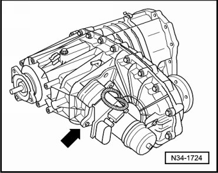
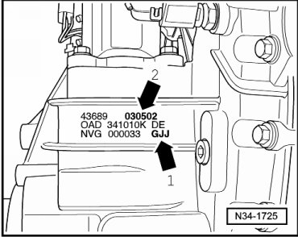
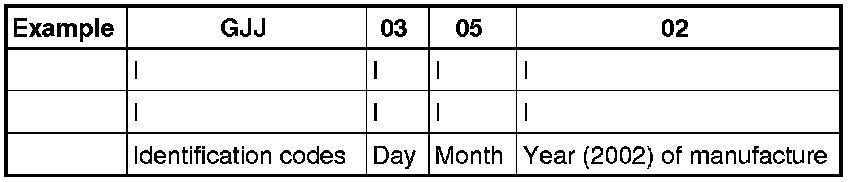

Transfer Case identification
Transfer Case identification
The transfer case 0AD is allocated to the automatic transmission 09D.
Off-road reduction gearing is integrated into the transfer case.
Switching between street gearing "HIGH" and off-road gearing "LOW" is accomplished with the transfer case operating unit (E473).
For code letters, refer to --> [ Code Letters, Transmission Allocation and Capacities ] Code Letters, Transmission Allocation and Capacities.
Location on transfer case - arrow -.

Code letters - arrow 1 - and date of manufacture - arrow 2 - of transfer case.


Additional data depends on manufacture.